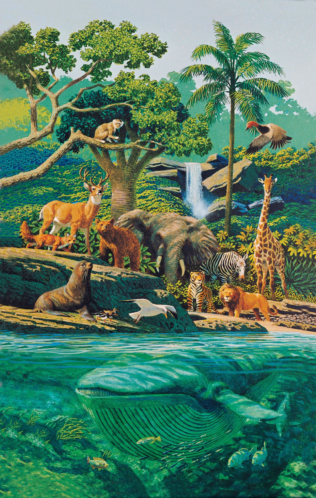
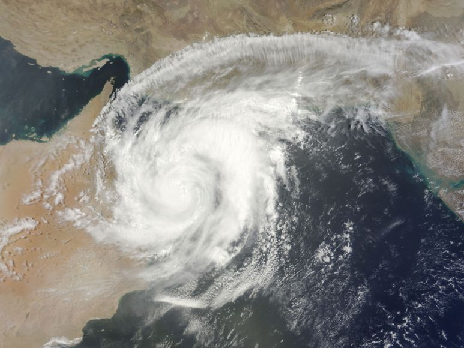

Atmosphere is essential for life because it has oxygen and other useful gases which humans need for their survival.
Water extensive capability to dissolve a variety of molecules has earned it the designation of “universal solvent,” and it is this ability that makes water such an invaluable life-sustaining force. On a biological level, water's role as a solvent helps cells transport and use substances like oxygen or nutrients.
Organisms(plants and animals) that live in water are directly or indirectly dependent on soil for their resource. They might consume food that has been made by the plants in the soil.
The Meteorological Department compiles a weather report that plots all of the weather data on maps. Weather forecasters use these maps to make relatively accurate weather predictions, which are subsequently broadcast on the radio and television.
5.We know that many human activities lead to increasing levels of pollution of the air, water-bodies and soil. Do you think that isolating these activities to specific and limited areas would help in reducing pollution?
Yes. Isolating human activities to specific areas would help in reducing levels of pollution. For example, setting up of industries in isolated regions will control pollution to some extent. The pollution caused by these industries will not contaminate water resources, agriculture land, fertile land etc